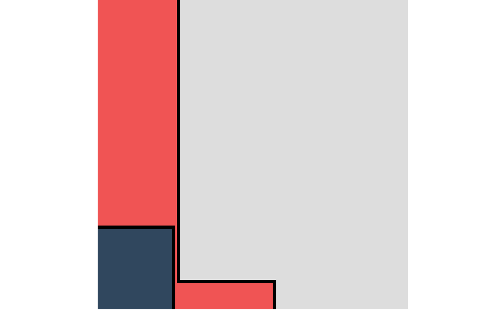

This function paints random squares and rectangles. It works by repeatedly cutting into the canvas at random locations and coloring the area that these cuts create.
canvas_squares(
colors,
background = "#000000",
cuts = 50,
ratio = 1.618,
resolution = 200,
noise = FALSE
)a string or character vector specifying the color(s) used for the artwork.
a character specifying the color used for the borders of the squares.
a positive integer specifying the number of cuts to make.
a value specifying the 1:1 ratio for each cut.
resolution of the artwork in pixels per row/column. Increasing the resolution increases the quality of the artwork but also increases the computation time exponentially.
logical. Whether to add k-nn noise to the artwork. Note that adding noise increases computation time significantly in large dimensions.
A ggplot object containing the artwork.
colorPalette
# \donttest{
set.seed(1)
# Simple example
canvas_squares(colors = colorPalette("retro2"))

# }